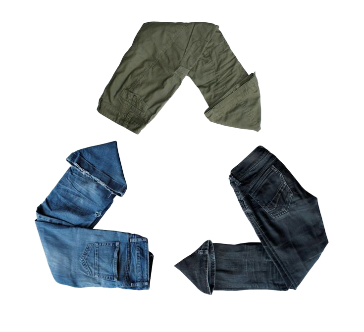

Who we are..
We believe in a sustainable (Susty) fashion future.
It's about shopping with intention, rejecting throw
away fashion culture, and standing for sustainability.
The clothes we wear have the power to create change.

Fashion is home
to visionaries
who see a more
sustainable and
brighter future

How it works...
We encourage our community to utilize our drop boxes
around Houston to donate any and all clothes. We then
take new upcycled clothing items and give them a
second life.